单细胞代码复写| 干细胞样CD4+ T细胞与自身免疫性血管炎
原文：https://mp.weixin.qq.com/s?__biz=MzAwMzIzOTk5OQ==&mid=2247506684&idx=1&sn=c27703a05d4fffae6a5e9e54b4fa7dfe&chksm=9b3ca3acac4b2abaa1e5d4f4a7e4d0730f2e5c4d72c7b3d3d29a653c3bae6590d90e31908dde#rd 合集：单细胞教程全收录 / 全文复现
评审环节开始！
** 写在前面**
首届“寻因杯”单细胞代码复写大赛正在展开评审环节，这次带来的是01号作品。本作品复写了题为"Stem-like CD4+ T cells in perivascular tertiary lymphoid structures sustain autoimmune vasculitis"的论文，复图片集锦如下：
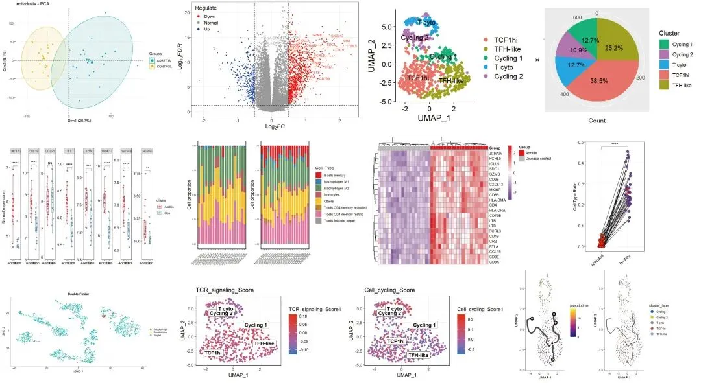
论文基本介绍如下：
论文链接: https://www.science.org/doi/10.1126/scitranslmed.adh0380
大弹性动脉自身免疫性血管炎可引起失明、中风、主动脉弓综合征和主动脉瘤。该疾病通常是免疫抑制治疗难治性的，并且在几十年内进展为阴燃性主动脉炎。血管壁中的肉芽肿性浸润是如何维持的以及组织浸润性T细胞和巨噬细胞是如何补充的尚不清楚。血管炎动脉中免疫细胞群的单细胞和全组织转录组学研究确定了具有干细胞样特征的CD 4 + T细胞群。提供组织浸润和组织损伤效应T细胞的CD 4 + T细胞在外膜血管周围的三级淋巴结构中存活，表达转录因子T细胞因子1（TCF 1），具有高增殖潜力，并产生两个效应细胞群，即Eomesodermin（EOMES）+细胞毒性T细胞和B细胞淋巴瘤6（BCL 6）+ T滤泡辅助细胞样细胞。TCF 1hiCD 4 + T细胞表达白细胞介素7受体（IL-7 R）持续血管炎在系列移植实验。因此，TCF 1hiCD 4 + T细胞作为疾病干细胞发挥作用，并促进自身免疫组织炎症的慢性化和自主性。缓解诱导疗法将需要靶向干细胞样CD 4 + T细胞而不仅仅是效应T细胞。
研究方法 ：
病人和样本：
-
从22名GCA aortitis患者和20名疾病对照组（无炎性上行主动脉瘤）中获取临床和人口特征的样本。
-
还有四个正常人的动脉样本来做外部对照.
-
GCA的诊断是通过颞动脉活检进行确认的。
组织学和转录组学分析：
-
对上行主动脉瘤样本进行组织学分析，发现所有巨细胞动脉炎病例均有结构化的外周淋巴团。
-
使用单细胞RNA测序（scRNA-seq）以及人血管－NSG小鼠嵌合模型，在受控条件下识别与疾病相关的CD4+ T细胞的异质性和功能。
单细胞RNA测序（scRNA-seq）：
-
从人化小鼠的人类动脉组织中分离CD4+ T细胞。
-
使用10x Genomics的Chromium Single-Cell Controller进行scRNA-seq，并准备测序库。
-
对scRNA-seq数据进行质量控制、标准化、降维、聚类，提取关注的T细胞类群，差异表达分析，细胞周期信号和TCR信号和可视化,时序分析。以及对照和发现大量感兴趣的先验基因
抗体标记和细胞表面分析：
-
细胞通过使用一系列共轭抗体标记，这些抗体详见表S2，在4°C下孵育20分钟。
-
对于细胞内部的TCF1和TBX21染色，细胞被标记，然后在PBS中洗涤，随后使用Foxp3/TF染色缓冲液渗透化。随后使用抗人TCF1和TBX21抗体染色。抗体信息包括克隆类型和目录号。
追踪休息状态下人类CD4+ T细胞的增殖：
-
从全血中分离PBMCs（外周血单个核细胞）。
-
从健康老年人的PBMCs中分离Naïve和Memory CD4+ T细胞，使用STEMCELL Technologies的分离试剂盒。
-
使用CellTrace Violet标记CD4+ T细胞，并将它们与Anti-CD3/Anti-CD28涂覆的Dynabeads一起培养，以刺激细胞增殖。
-
细胞在含有10%胎牛血清、青霉素/链霉素和IL-2（10 ng/ml）的RPMI 1640培养基中培养6天，然后通过流式细胞仪进行分析。Cell Trace Violet荧光信号的每个峰代表一个细胞分裂周期。
组织学损伤评分：
-
通过观察从人类小鼠嵌合体中摘取的动脉切片的H&E染色，评分炎症严重性、炎症范围和血管损伤。
-
评分是使用半定量的刻度进行的，分别为每个特征的子分数的平均值相加而得。
作者首先收集了临床样本，包括患有主动脉炎和非炎性动脉瘤的组织，以及对照组的样本。通过全组织RNA测序分析，作者比较了这些样本之间的基因表达差异，揭示了与主动脉炎相关的生物学过程。接着，作者进行了单细胞RNA测序研究，鉴定了CD4+ T细胞的不同亚型，并深入探究它们的分子特征和功能。最后，作者利用时序和进一步的基于先验知识以及自身知识找到了T细胞中与TLS密切有关的T细胞类群，研究其在动脉中的淋巴结样结构(TLS的作用)
-
样本采集
-
组织学分析
-
单细胞和全组织转录组学研究
-
抗体标记和免疫细胞表面分析
-
评估淋巴结样结构（TLS）
-
-
样本收集
-
无监督PCA分析
-
差异表达基因鉴定
-
基因本体分析
-
淋巴结样结构相关基因
-
IL-7等基因表达
-
细胞成分分析
-
全局组织RNA测序分析
-
-
引发主动脉炎
-
聚类分析
-
确定细胞亚型
-
分子特征分析
-
分离CD4+ T细胞
-
单细胞RNA测序
-
数据分析
-
-
疾病相关性
-
确认TCF1hi CD4+ T细胞存在于TLS中
-
TCF1hi和TCF1lo T细胞的定位
-
TCF1hi T细胞的增殖能力
-
CD11c+ DCs在TLS中的分布
-
一、复写内容
转录组分析部分
CD4 T cells in Giant Cell Arteritis (RNA-Seq) GSE224526(42),GSE141032(normal 4 )
数据准备 无法收集到数据年林以及GSE141032 的四个正常样本
# 加载GEOquery包
library(GEOquery)
## 载入需要的程辑包：Biobase
## 载入需要的程辑包：BiocGenerics
##
## 载入程辑包：'BiocGenerics'
## The following objects are masked from 'package:stats':
##
## IQR, mad, sd, var, xtabs
## The following objects are masked from 'package:base':
##
## anyDuplicated, aperm, append, as.data.frame, basename, cbind,
## colnames, dirname, do.call, duplicated, eval, evalq, Filter, Find,
## get, grep, grepl, intersect, is.unsorted, lapply, Map, mapply,
## match, mget, order, paste, pmax, pmax.int, pmin, pmin.int,
## Position, rank, rbind, Reduce, rownames, sapply, setdiff, sort,
## table, tapply, union, unique, unsplit, which.max, which.min
## Welcome to Bioconductor
##
## Vignettes contain introductory material; view with
## 'browseVignettes()'. To cite Bioconductor, see
## 'citation("Biobase")', and for packages 'citation("pkgname")'.
## Setting options('download.file.method.GEOquery'='auto')
## Setting options('GEOquery.inmemory.gpl'=FALSE)
library(dplyr)
##
## 载入程辑包：'dplyr'
## The following object is masked from 'package:Biobase':
##
## combine
## The following objects are masked from 'package:BiocGenerics':
##
## combine, intersect, setdiff, union
## The following objects are masked from 'package:stats':
##
## filter, lag
## The following objects are masked from 'package:base':
##
## intersect, setdiff, setequal, union
# # 读取GSE224526数据
# gse224526 <- getGEO("GSE224526")
# # 如果要获取原始数据，可以使用以下命令
# gse224526 <- getGEO(filename = "GSE224526_family.soft")
# 提取meta信息
# meta_data_gse224526 <- pData(gse224526$GSE224526_series_matrix.txt.gz)
# 其表达量数据存储在GSE的附录中
# getGEOSuppFiles(GEO = "GSE224526")
con <- gzfile("GSE224526/GSE224526_Bulk_RNA_processed_count.txt.gz", "rt")
count_data_gse224526 <- read.table(con, header = TRUE, sep = "\t")
close(con) # 关闭.gz文件
# QC 过滤下基因
keep_feature <- rowSums (count_data_gse224526 > 1) > 1
count_data_gse224526 <- count_data_gse224526[keep_feature, ]
==检查完数据后发现缺少了性别信息也就是有些无法进行处理，也就是直接对照和疾病组进行差异分析无法进行校正==
图二 复现
library(DESeq2)
library(dplyr)
# 所以直接新建一个metadata
meta_data_gse224526 = data.frame(
smaple_id = colnames(count_data_gse224526),
group = sub("_.*", "", colnames(count_data_gse224526))
)
rownames(meta_data_gse224526) <- meta_data_gse224526$smaple_id
dds <- DESeqDataSetFromMatrix(countData = count_data_gse224526, colData = meta_data_gse224526, design = ~ group)
# regularized log
dds <- DESeq(dds)
rld <- rlog(dds)
# 获取标准化前和标准化后的数据集
library(RColorBrewer)
count_data_before <- counts(dds) # 标准化前的数据
count_data_after <- assay(rld) # 标准化后的数据
color <- colorRampPalette(brewer.pal(9, "RdGy"))(ncol(count_data_before))
boxplot(as.data.frame(log2(edgeR::cpm(count_data_before) + 1)),col = color, las =2, main = "CPM Boxplot count_data_before ", ylab = "log2(CPM + 1)")
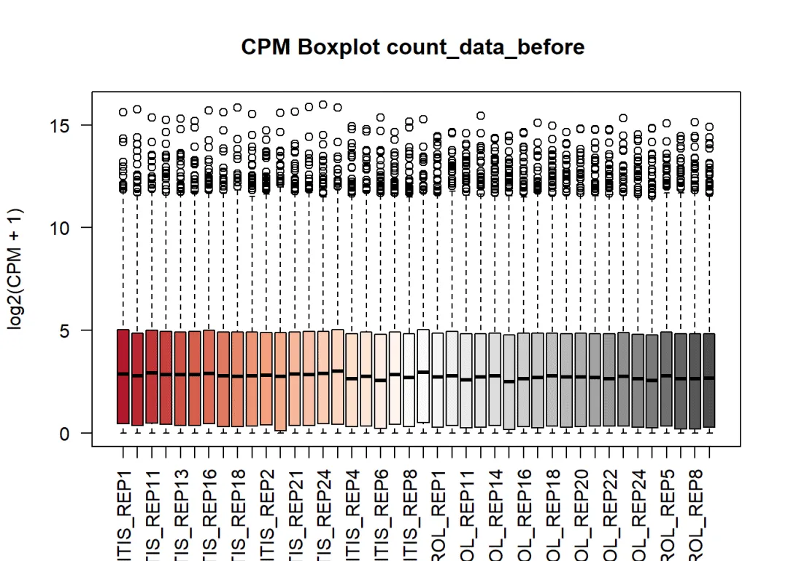
boxplot(as.data.frame(count_data_after),col = color, las = 2, main = "CPM Boxplot count_data_after ", ylab = "log2(CPM + 1)")
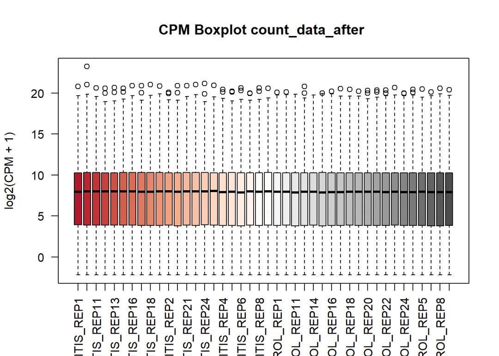
PCA 图绘制
library(FactoMineR)
library(factoextra)
## 载入需要的程辑包：ggplot2
## Welcome! Want to learn more? See two factoextra-related books at https://goo.gl/ve3WBa
library(ggplot2)
pca_data <- as.data.frame(t(assay(rld))) # 将rld数据转换为数据框
# # 提取PCA的结果
res.pca <- PCA(pca_data,graph = FALSE)
fviz_screeplot(res.pca, addlabels = TRUE)
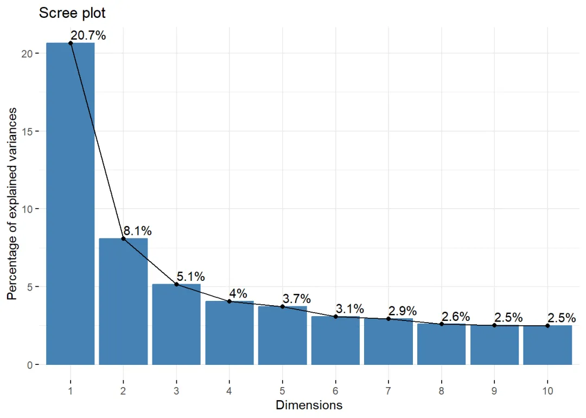
#绘制椭圆
fviz_pca_ind(res.pca,
geom.ind = "point", # 只显示点而不显示文本，默认都显示
# 设定分类种类
col.ind = sub("_.*","",rownames(pca_data)),
# 设定颜色
palette = c("#00AFBB", "#E7B800", "#FC4E07"),
addEllipses = TRUE,# 添加置信椭圆
legend.title = "Groups",
)
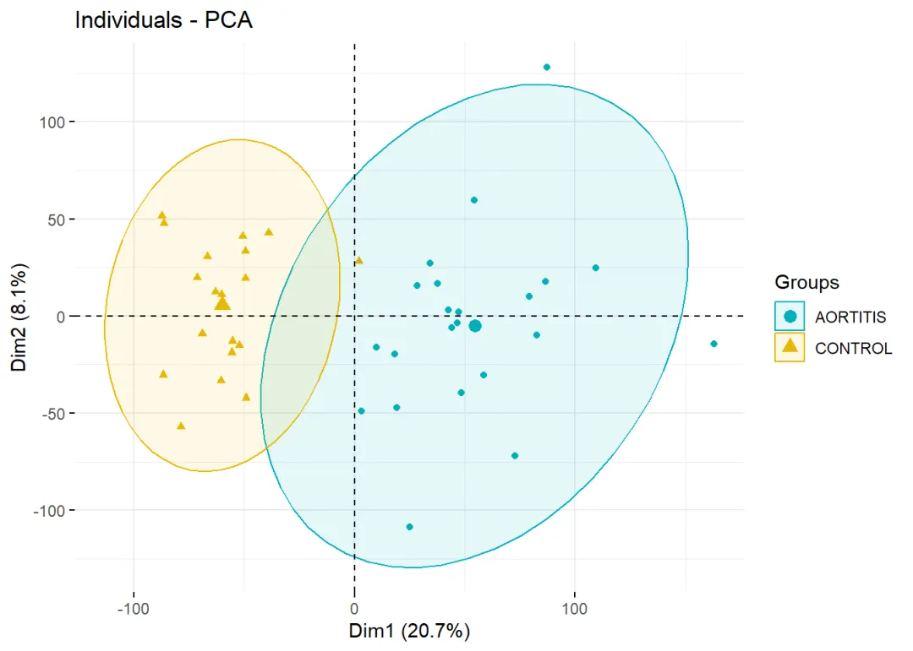
差异基因计算 因为作者表述感觉不太清楚这里直接接着DEseq2 计算差异基因 作者这里用了edger和limma的复合方法
library(limma)
##
## 载入程辑包：'limma'
## The following object is masked from 'package:DESeq2':
##
## plotMA
## The following object is masked from 'package:BiocGenerics':
##
## plotMA
library(edgeR)
cpm_values <- log2(edgeR::cpm(count_data_before)+1)
design_matrix = model.matrix(~ group, data = meta_data_gse224526)
vwts <- voomWithQualityWeights(cpm_values,design_matrix, plot=TRUE)
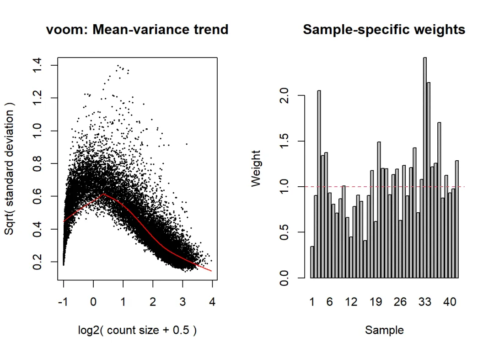
vfit2 <- lmFit(vwts)
vfit2 <- eBayes(vfit2)
topTable(vfit2,coef=2,sort.by="P")
## logFC AveExpr t P.Value adj.P.Val B
## DOCK2 -0.3343891 6.924801 -18.08811 8.905054e-22 1.780031e-17 39.38753
## NCKAP1L -0.3761442 6.806023 -17.27300 5.152471e-21 3.696969e-17 37.67027
## DOCK8 -0.3251928 7.051889 -17.23924 5.548505e-21 3.696969e-17 37.48083
## ITGA4 -0.4624582 6.691958 -16.88627 1.211372e-20 6.053528e-17 36.85923
## PTPRC -0.3043717 7.232658 -16.68452 1.903185e-20 7.608552e-17 36.12893
## SEL1L3 -0.6197079 6.576737 -16.50916 2.827760e-20 9.420681e-17 36.05008
## TLR6 -0.6156661 6.193788 -16.37695 3.819310e-20 1.090631e-16 35.64093
## INPP5D -0.3409999 6.716971 -15.90707 1.127760e-19 2.817848e-16 34.60082
## PIK3CG -0.4806987 6.394572 -15.79435 1.467256e-19 3.258776e-16 34.42304
## OSBPL3 -0.5792519 6.397548 -15.68704 1.887320e-19 3.546665e-16 34.17187
top2 <- topTable(vfit2,coef=2,number=Inf,sort.by="P")
sum(top2$adj.P.Val<0.05 & abs(top2$logFC)>0.5) # 这里是1331个和文章中为1070 可能是文章中年龄矫正起到效果了吗不太懂了不过也没指定logFC的限制 0.55的话就是1095了
## [1] 1311
差异基因结果可视化 火山图和GO的功能注释BP
msigdbr 下载对应数据集
library(msigdbr)
# all_gene_sets <- msigdbr(species = "Homo sapiens", category = "C2")
GO_gene_sets = msigdbr(species = "Homo sapiens",category = "C5",subcategory = "GO:BP")
all_gene_sets = GO_gene_sets
# H: hallmark gene sets
# C1: positional gene sets
# C2: curated gene sets
# C3: motif gene sets
# C4: computational gene sets
# C5: GO gene sets
# C6: oncogenic signatures
# C7: immunologic signatures
length(unique(table(all_gene_sets$gs_name)))
## [1] 686
tail(table(all_gene_sets$gs_name))
##
## GOBP_ZINC_ION_HOMEOSTASIS
## 48
## GOBP_ZINC_ION_IMPORT_ACROSS_PLASMA_MEMBRANE
## 10
## GOBP_ZINC_ION_TRANSPORT
## 36
## GOBP_ZYGOTIC_DETERMINATION_OF_ANTERIOR_POSTERIOR_AXIS_EMBRYO
## 6
## GOBP_ZYMOGEN_ACTIVATION
## 69
## GOBP_ZYMOGEN_INHIBITION
## 8
gcSample = split(all_gene_sets$gene_symbol,
all_gene_sets$gs_name)
# file="Homo-C5-GO-BP.txt"
# gs=gcSample
# write.gmt <- function(gs,file){
# sink(file)
# lapply(names(gs), function(i){
# cat( paste(c(i,'tmp',gs[[i]]),collapse='\t') )
# cat('\n')
# })
# sink()
# }
# write.gmt(gs,file)
# 功能注释gsea
library(fgsea)
library(org.Hs.eg.db)
## 载入需要的程辑包：AnnotationDbi
##
## 载入程辑包：'AnnotationDbi'
## The following object is masked from 'package:dplyr':
##
## select
##
library(tidyverse)
## ── Attaching core tidyverse packages ──────────────────────── tidyverse 2.0.0 ──
## ✔ forcats 1.0.0 ✔ stringr 1.5.0
## ✔ lubridate 1.9.3 ✔ tibble 3.2.1
## ✔ purrr 1.0.2 ✔ tidyr 1.3.0
## ✔ readr 2.1.4
## ── Conflicts ────────────────────────────────────────── tidyverse_conflicts() ──
## ✖ lubridate::%within%() masks IRanges::%within%()
## ✖ IRanges::collapse() masks dplyr::collapse()
## ✖ dplyr::combine() masks Biobase::combine(), BiocGenerics::combine()
## ✖ matrixStats::count() masks dplyr::count()
## ✖ IRanges::desc() masks dplyr::desc()
## ✖ tidyr::expand() masks S4Vectors::expand()
## ✖ dplyr::filter() masks stats::filter()
## ✖ S4Vectors::first() masks dplyr::first()
## ✖ dplyr::lag() masks stats::lag()
## ✖ ggplot2::Position() masks BiocGenerics::Position(), base::Position()
## ✖ purrr::reduce() masks GenomicRanges::reduce(), IRanges::reduce()
## ✖ S4Vectors::rename() masks dplyr::rename()
## ✖ lubridate::second() masks S4Vectors::second()
## ✖ lubridate::second<-() masks S4Vectors::second<-()
## ✖ AnnotationDbi::select() masks dplyr::select()
## ✖ IRanges::slice() masks dplyr::slice()
## ℹ Use the conflicted package (<http://conflicted.r-lib.org/>) to force all conflicts to become errors
res2 <- top2 %>%mutate(SYMBOL = rownames(.))%>%dplyr::select(SYMBOL, logFC) %>%
na.omit() %>%
distinct() %>%
group_by(SYMBOL) %>%
summarize(stat=mean(logFC))
ranks <- deframe(res2)
# gene_list = top2 %>% filter(top2$adj.P.Val<0.05 & abs(top2$logFC)>0.5)%>%rownames()
# 运行GSEA分析
results <- fgsea(pathways=gcSample, stats=ranks, nperm=1000)
## Warning in fgsea(pathways = gcSample, stats = ranks, nperm = 1000): You are
## trying to run fgseaSimple. It is recommended to use fgseaMultilevel. To run
## fgseaMultilevel, you need to remove the nperm argument in the fgsea function
## call.
## Warning in preparePathwaysAndStats(pathways, stats, minSize, maxSize, gseaParam, : There are ties in the preranked stats (0.06% of the list).
## The order of those tied genes will be arbitrary, which may produce unexpected results.
## Warning in fgseaSimple(pathways = pathways, stats = stats, minSize = minSize, :
## There were 1 pathways for which P-values were not calculated properly due to
## unbalanced gene-level statistic values
results2 = results[results $padj < 0.05]
results2_top10 = results2[order(results2$padj)[1:10],]
results2_top10%>%mutate(pathway=tolower(gsub("GOBP","",gsub("_"," ",pathway))))%>% ggplot(aes(x = -log10(pval), y = reorder(pathway, -log10(pval)))) +
geom_bar(stat = "identity", fill = "orange") +
labs(x = "-log10(Pvalue)", y = "Pathway",title = "GSEA") +
theme_minimal() +
theme(axis.text.x = element_text(angle = 90, hjust = 1))
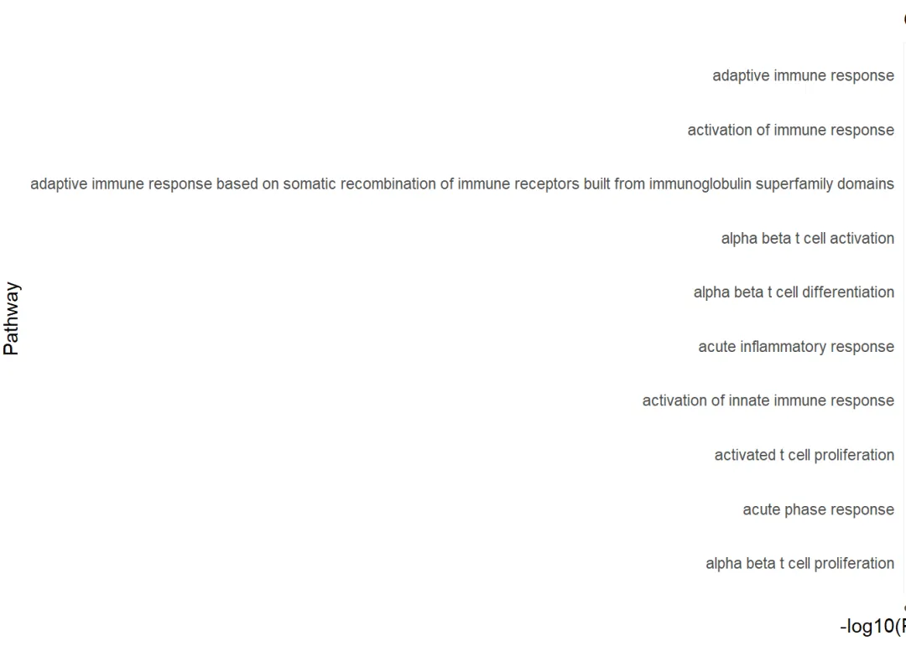
火山图+热图
# EGs highly enriched in the aortitis tissues pointed toward ongoing Tcell– and B cell–dependent immune responses: T cells (CD3E,
# CD4, CD8A, GZMB, and LTB), B cells (CD19, CD38, SDC1,
# FCRL3, FCRL5, CR2, LTB, JCHAIN, IGLL5, and CD79B), antigen
# presentation (HLA-DRA, HLA-DMA, and CD86), homeostatic
# chemokines (CXCL13, CCL19), proliferation, and activation
# (MKI67 and BTLA) (Fig. 2B).
library(ggVolcano)
library(cowplot)
##
## 载入程辑包：'cowplot'
## The following object is masked from 'package:lubridate':
##
## stamp
target_genes <- c("CD3E", "CD4", "CD8A", "GZMB", "LTB", "CD19", "CD38", "SDC1", "FCRL3", "FCRL5", "CR2", "LTB", "JCHAIN", "IGLL5", "CD79B", "HLA-DRA", "HLA-DMA", "CD86", "CXCL13", "CCL19", "MKI67", "BTLA")
top2 = add_regulate(top2, log2FC_name = "logFC",
fdr_name = "adj.P.Val",log2FC = 0.5, fdr = 0.05)
top2$log2FoldChange = - top2$log2FoldChange
top2$row = rownames(top2)
ggvolcano(
top2,
x = 'log2FoldChange',
y = "P.Value",
pointSize = 1,
pointShape = 21,
fills = c("red" , "#999999", "blue"),
colors = c("red" , "#999999", "blue"),
x_lab = NULL,
y_lab = NULL,
legend_title = NULL,
legend_position = "UL",
log2FC_cut = 0.5,
FDR_cut = 0.05,
add_line = TRUE,
add_label = TRUE,
label = "row",
label_number = 0,
custom_label = target_genes,
output = FALSE
)
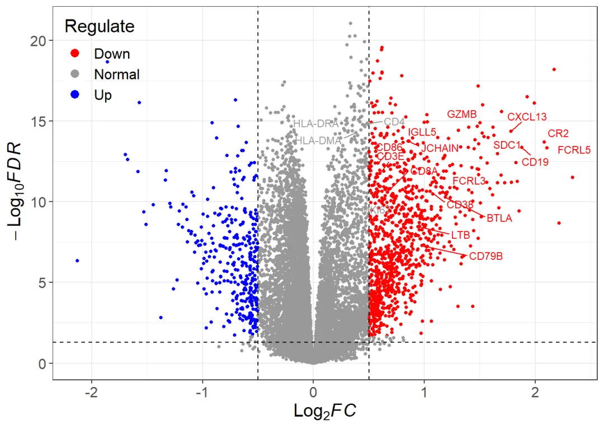
# 绘制热图
library(pheatmap)
target_gene_expression <- count_data_after[target_genes,]
sample_heatmap_anntion = data.frame(
Group = gsub("_.*","",colnames(count_data_after))%>%gsub("AORTITIS","Aortitis",.)%>%gsub("CONTROL","Disease control",.)
)
sample_heatmap_anntion_colprs = list(
Group =c('Aortitis' = 'red','Disease control' = 'gray')
)
rownames(sample_heatmap_anntion) = colnames(count_data_after)
pheatmap(target_gene_expression, cluster_rows = TRUE, cluster_cols = TRUE,scale = 'row',annotation_col = sample_heatmap_anntion,show_colnames = FALSE,color = colorRampPalette(c("purple", "white", "red"))(100),treeheight_row = 10,treeheight_col = 20,annotation_colors = sample_heatmap_anntion_colprs)
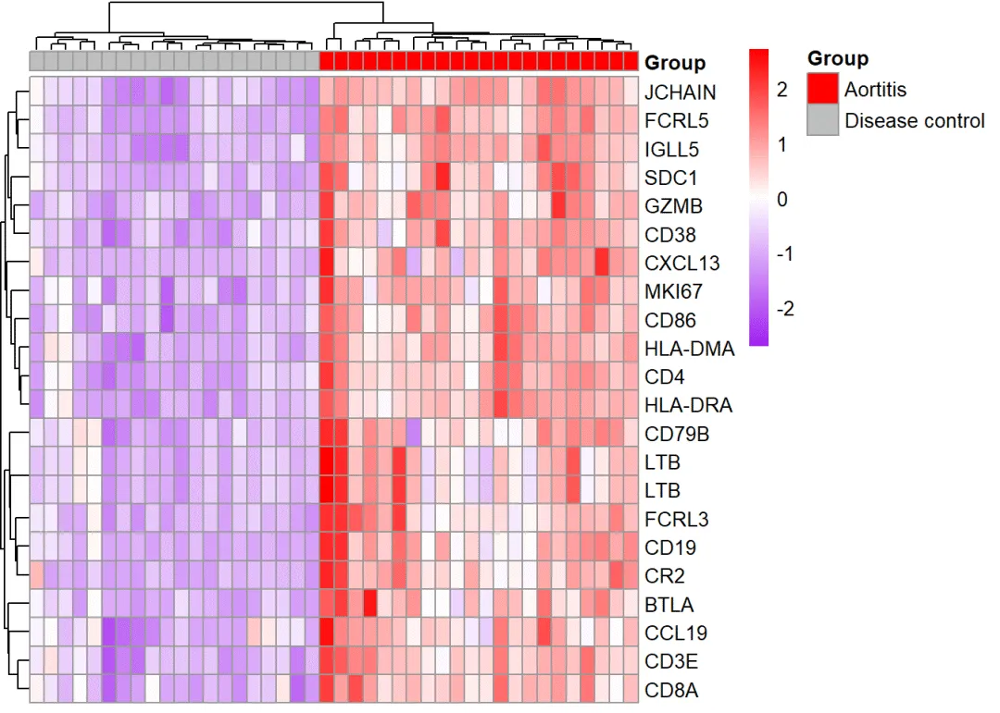
作者关注的Gene的 箱线图(TPM)
library(ggpubr)
##
## 载入程辑包：'ggpubr'
## The following object is masked from 'package:cowplot':
##
## get_legend
# 目标基因
target_genes2 = str_split(pattern = " ",'CXCL13 CCL19 CCL21 IL7 IL15 TNFSF13B TNFSF8 TNFRSF8')%>%unlist()
# 矩阵
target_gene_expression = count_data_after[target_genes2,]
# 像这种多组之间两两比较，需要提前设置一个list，里面包含的是两两比较的对象
list = list(c("Con","Aortitis"))
# 把数据转成纵性数据
df=reshape2::melt(target_gene_expression)
colnames(df) = c("gene","class","value")
df$class = as.character(df$class)
df$class = df$class%>%gsub("_.*","",.)%>%gsub("CONTROL","Con",.)%>%gsub("AORTITIS","Aortitis",.)
ggplot(df, # 用来画图的数据集名称
aes(class, # 数据集的Species列作为横坐标
value, # 数据集的value列作为纵坐标
color = class, # 根据数据集的Species列设置箱线图的边框颜色
fill = class))+ # 根据数据集的Species列设置散点图和箱线图的填充颜色
geom_jitter(width=.15)+ # 将散点图的宽度设置为0.15,缩窄一些
geom_boxplot(width=.4, alpha=.2)+ # 将箱线图的宽度设置为0.4，缩窄了一些，不透明度设置为0.2，填充颜色变得很浅
scale_color_manual(values = c("#BF5960","#6F99AD","#F9A363"))+ # 自定义边框颜色
scale_fill_manual(values = c("#BF5960","#6F99AD","#F9A363"))+ # 自定义填充颜色，可以和边框颜色不一样，我觉得配套的比较好看，就用了一样的颜色
theme_test()+ # 把背景颜色去掉并添加边框，可以修改为其他背景，比如theme_classic
labs(y="Normal(experssion)", x="")+ # 修改横纵坐标名称
stat_compare_means(comparisons = list, method = "wilcox.test", #像这种非配对的非正态分布的数据，可以用非参数检验方法，这里选的是非参的其中一种，叫秩和检验
size=4, # 将p值字体改小一些
label = "p.signif")+ # 把p值改为星号
scale_y_continuous(expand = c(0.1,0.1))+ # 将y轴上下拉宽一点，这样被遮住的p值就可以呈现出来啦~
facet_wrap(.~gene, # 同时做几个图，这几个图分别对应数据转换前的第1列到第4列
nrow=1,# 图排成两行两列
scale="free")+ # 横纵坐标不要统一成一样的，各个图根据自己情况来自动设置横纵坐标的范围
theme(axis.text = element_text(color="black", size=10),
axis.line = element_blank()) # 把横纵坐标的字体颜色改为黑色，看起来更沉稳
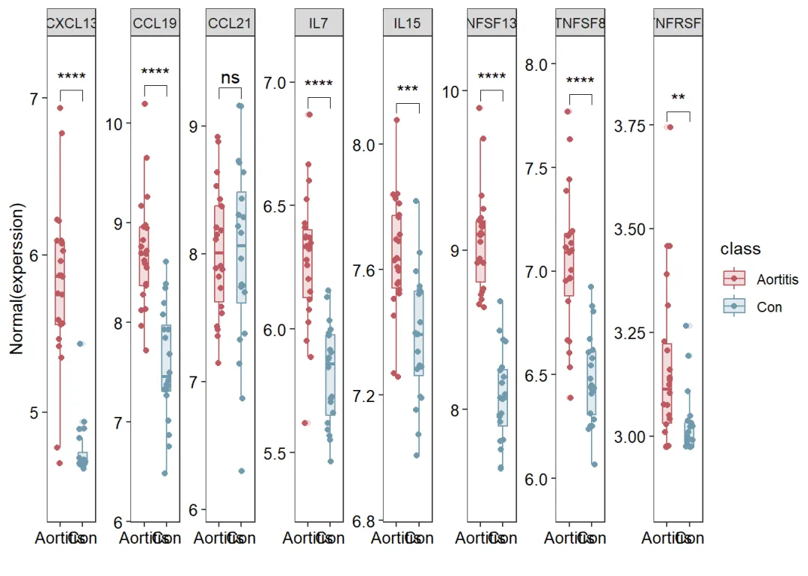
不同细胞类型的占比图
source("./Cibersort.R")
# 设置分析依赖的基础表达文件
# 每类免疫细胞的标志性基因及其表达
# 基因名字为Gene symbol
LM22.file <- "./LM22.txt"
exp.file <- "./GSE224526/GSE224526_Bulk_RNA_processed_count.txt.gz"
TME.results <- CIBERSORT(LM22.file ,exp.file, perm = 50, QN = F)
# perm置换次数=1000
# QN如果是芯片设置为T，如果是测序就设置为F
write.csv(TME.results, "CIBERSORT_Results_fromRcode.csv")
library(tidyr)
library(patchwork)
##
## 载入程辑包：'patchwork'
## The following object is masked from 'package:cowplot':
##
## align_plots
library(ggplot2)
library(dplyr)
phenotype = read.csv("CIBERSORT_Results_fromRcode.csv",header = T,row.names = 1)
phenotype_long <- phenotype %>%mutate(Sample=rownames(.))%>%pivot_longer(cols = -c("P.value", "Correlation", "RMSE","Sample"),
names_to = "Cell_Type",
values_to = "Cell_Type_Ratio")%>%dplyr::select(-P.value, -Correlation, -RMSE)%>%mutate(Cell_Type = ifelse( Cell_Type %in%c("Macrophages.M1", "Macrophages.M2", "Monocytes", "B.cells.memory", "T.cells.CD4.memory.activated", "T.cells.CD4.memory.resting", "T.cells.follicular.helper"),Cell_Type, "Others"))%>%mutate(Cell_Type = gsub(pattern="\\."," ",Cell_Type))%>%mutate(Group=gsub(pattern="_.*","",Sample))
# M1,M2 , Monocytes, B.cells.memory, T.cells.CD4.memory.activated, T.cells.CD4.memory.resting, T.cells.follicular.helper, Others
colourCount = length(unique(phenotype_long$Cell_Type))
getPalette = colorRampPalette(brewer.pal(9, "Set1"))
celltype_colors <- getPalette(colourCount)
pC1 <- ggplot(data = phenotype_long%>% filter(Group=="CONTROL"), aes(x = Sample, y = Cell_Type_Ratio, fill = Cell_Type)) +
geom_bar(stat = "identity", width=0.8,aes(group=Cell_Type),position="fill")+
scale_fill_manual(values=celltype_colors) +
theme_bw()+
theme(panel.grid =element_blank()) +
labs(x="",y="Cell proportion")+
scale_y_continuous(labels = waiver())+ ####用来将y轴移动位置
theme(axis.text = element_text(size=5, colour = "black"))+
theme(axis.title.y = element_text(size=12, colour = "black"))+
theme(panel.border = element_rect(size = 1, linetype = "solid", colour = "black"))+
theme(axis.text.x = element_text(angle = 45,hjust = 0.8, vjust = 0.6))
## Warning: The `size` argument of `element_rect()` is deprecated as of ggplot2 3.4.0.
## ℹ Please use the `linewidth` argument instead.
## This warning is displayed once every 8 hours.
## Call `lifecycle::last_lifecycle_warnings()` to see where this warning was
## generated.
pC2 <- ggplot(data = phenotype_long%>% filter(Group!="CONTROL"), aes(x = Sample, y = Cell_Type_Ratio, fill = Cell_Type)) +
geom_bar(stat = "identity", width=0.8,aes(group=Cell_Type),position="fill")+
scale_fill_manual(values=celltype_colors) +
theme_bw()+
theme(panel.grid =element_blank()) +
labs(x="",y="Cell proportion")+
scale_y_continuous(labels = waiver())+ ####用来将y轴移动位置
theme(axis.text = element_text(size=5, colour = "black"))+
theme(axis.title.y = element_text(size=12, colour = "black"))+
theme(panel.border = element_rect(size = 1, linetype = "solid", colour = "black"))+
theme(axis.text.x = element_text(angle = 45,hjust = 0.8, vjust = 0.6))
pC1+pC2+ plot_layout(ncol = 2, widths = c(1,1),guides = 'collect')
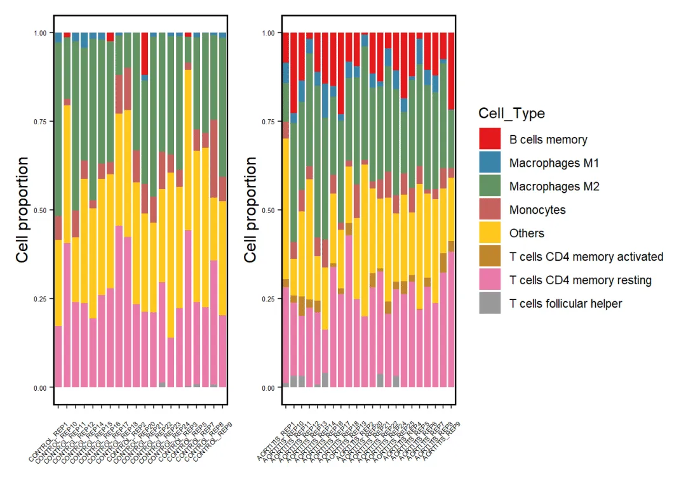
细胞类型的散点图
library(dplyr)
library(ggplot2)
library(ggpubr)
library(rstatix)
##
## 载入程辑包：'rstatix'
## The following object is masked from 'package:AnnotationDbi':
##
## select
## The following object is masked from 'package:IRanges':
##
## desc
## The following object is masked from 'package:stats':
##
## filter
library(ggpubr)
library(RColorBrewer)
mytheme <- theme(plot.margin=unit(c(0.5,0.5,0.5,0.5),units=,"cm"),
axis.line = element_line(color = "black",size = 0.4),
panel.grid.minor = element_blank(),
panel.grid.major = element_line(size = 0.2,color = "#e5e5e5"),
axis.text.y = element_text(color="black",size=10),
axis.text.x = element_text(angle = 45, hjust = 1 ,color="black",size=10),
legend.position = "none",
panel.spacing = unit(0,"lines"))
## Warning: The `size` argument of `element_line()` is deprecated as of ggplot2 3.4.0.
## ℹ Please use the `linewidth` argument instead.
## This warning is displayed once every 8 hours.
## Call `lifecycle::last_lifecycle_warnings()` to see where this warning was
## generated.
fill.color = c("T cells CD4 memory activated"="#F32700","T cells CD4 memory resting"= "#6D4A95")
ggplot(phenotype_long%>%filter(Cell_Type %in% c("T cells CD4 memory activated", "T cells CD4 memory resting")), aes(x = Cell_Type,y = Cell_Type_Ratio,fill = Cell_Type)) +
geom_line(aes(group=Sample),position = position_dodge(0.2),color="black") +
geom_point(aes(group=Cell_Type,size=Cell_Type_Ratio),
pch=21,
size=3,
# position = position_dodge(0),
position = position_jitter(w = 0.1))+
stat_summary(fun.data = 'mean_se', geom = "errorbar", color = "red",
width = 0.25, size = 0.8, position = position_dodge( .9)) +
scale_fill_manual(values= fill.color) +
scale_x_discrete( labels=c("Activated","Resting") ) +
stat_compare_means(comparisons = list(c("T cells CD4 memory activated", "T cells CD4 memory resting")), method = "wilcox.test", #像这种非配对的非正态分布的数据，可以用非参数检验方法，这里选的是非参的其中一种，叫秩和检验
size=4, # 将p值字体改小一些
label = "p.signif")+labs(x= NULL,y="Cell Type Ratio")+
theme_bw() + mytheme
## Warning: Using `size` aesthetic for lines was deprecated in ggplot2 3.4.0.
## ℹ Please use `linewidth` instead.
## This warning is displayed once every 8 hours.
## Call `lifecycle::last_lifecycle_warnings()` to see where this warning was
## generated.
## Warning in wilcox.test.default(c(0.0223650577175038, 0.0200130245653676, :
## 无法精確計算带连结的p值
 单细胞数据为小鼠数据GSE224527 小鼠没有TCR标注的GENE用的人的代替的
单细胞数据为小鼠数据GSE224527 小鼠没有TCR标注的GENE用的人的代替的
library(DoubletFinder)
library(Seurat)
library(ggplot2)
library(cowplot)
library(dplyr)
library(Rmagic)
# 导入数据为 pbmc.data
pbmc.data =read.table("./filtered_gene_bc_matrices/GSE224527_RAW/GSM7025594_Vascular_processed.txt/GSM7025594_Vascular_processed.txt")
# pbmc.data = magic(pbmc.data) 这个没做因为AMD不能用numpy1.6很奇怪
# Initialize the Seurat object with the raw (non-normalized data).
pbmc <- CreateSeuratObject(counts = pbmc.data,
project = "GSE224527", # pbmc3k是一个数据集名字，这个可以自己取名字我改为
min.cells = 3, min.features = 200)
# An object of class Seurat
# 13714 features across 2700 samples within 1 assay
# Active assay: RNA (13714 features, 0 variable features)
## Identification of mithocondrial genes
# 使用 PercentageFeatureSet 函数，通过正则表达式 ^MT-，识别并计算每个细胞中的线粒体基因的百分比。
pbmc[["percent.mt"]] <- PercentageFeatureSet(pbmc, pattern = "^MT-")
#
## Filtering cells following standard QC criteria.
# subset 函数可以用于创建一个新的对象，其中包含根据特定条件筛选的子集。
pbmc <- subset(pbmc, subset = nFeature_RNA > 200 & nFeature_RNA < 4000 &
percent.mt < 10)
# 双细胞去除：使用DoubletFinder去除双细胞
# 去双胞需要先聚类，均使用默认参数即可
pbmc <- NormalizeData(object = pbmc) %>%
FindVariableFeatures(selection.method = "vst", nfeatures = 2000) %>%
ScaleData() %>%
RunPCA()
# 简单判断一下用多少PC
ElbowPlot(pbmc, ndims=50)
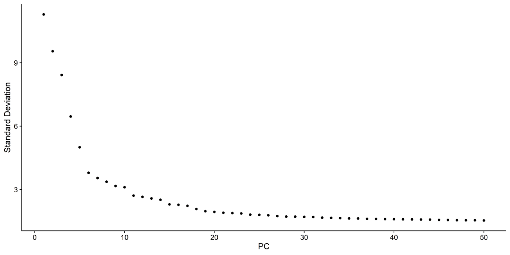
dim.usage <- 30 # 大概30的时候就好些不怎么下降了
# 不一定要聚类，但modelHomotypic这一步可能需要用到celltype或seurat_clusters
pbmc <- FindNeighbors(pbmc, dims = 1:dim.usage) %>%
FindClusters(resolution = 0.6) %>% # 对于这个分辨率值不太理解
RunUMAP(dims = 1:dim.usage) %>%
RunTSNE(dims = 1:dim.usage)
## Modularity Optimizer version 1.3.0 by Ludo Waltman and Nees Jan van Eck
##
## Number of nodes: 2638
## Number of edges: 97941
##
## Running Louvain algorithm...
## Maximum modularity in 10 random starts: 0.9214
## Number of communities: 12
## Elapsed time: 0 seconds
##DoubletFinder去双胞的标准流程，封装成一个函数
Find_doublet <- function(data){
#测试最佳参数的过程，运行速度慢
#使用log标准化，sct参数设置为 sct = F（默认 ）,如使用SCT标准化方法，设置为T
sweep.res.list <- paramSweep_v3(data, PCs = 1:dim.usage, sct = FALSE)
sweep.stats <- summarizeSweep(sweep.res.list, GT = FALSE)
bcmvn <- find.pK(sweep.stats)
#最佳的参数，BCmetric、MeanBC
#比较重要的一步是找到合适的pK值。
#作者引入了一个参数BCmetric，是他们通过分析人和老鼠混合单细胞样本（知道真实双细胞率的样本）得出的经验参数，其最大值对应合适的pK值。
mpK <- as.numeric(as.vector(bcmvn[bcmvn$BCmetric==max(bcmvn$BCmetric),]$pK))
DoubletRate = ncol(data)*8*1e-6 #按每增加1000个细胞，双细胞比率增加千分之8来计算
nExp_poi <- round(DoubletRate*ncol(data))
#双细胞有两种，同源双细胞和异源双细胞。DoubletFinder只能检测异源双细胞。所以需要把同源双细胞可能的比率去除掉，以优化期望的doublets数量。
#估计同源双细胞比例，根据modelHomotypic()中的参数人为混合双细胞。这里是从seurat_clusters中来混双细胞
#最好提供celltype，而不是seurat_clusters。
homotypic.prop <- modelHomotypic(data@meta.data$seurat_clusters)
nExp_poi.adj <- round(nExp_poi*(1-homotypic.prop))
#使用nExp = nExp_poi和nExp = nExp_poi.adj,分别进行doublets鉴定，以便后续确定哪些细胞是Doublet-Low/High Confidience
data <- doubletFinder_v3(data, PCs = 1:dim.usage, pN = 0.25, pK = mpK, nExp = nExp_poi, reuse.pANN = FALSE, sct = FALSE)
colnames(data@meta.data)[ncol(data@meta.data)] = "doublet_low"
data <- doubletFinder_v3(data, PCs = 1:dim.usage, pN = 0.25, pK = mpK, nExp = nExp_poi.adj, reuse.pANN = FALSE, sct = FALSE)
colnames(data@meta.data)[ncol(data@meta.data)] = "doublet_high"
return(data)
}
pbmc <- Find_doublet(pbmc)
## [1] "Creating artificial doublets for pN = 5%"
## [1] "Creating Seurat object..."
## [1] "Normalizing Seurat object..."
## [1] "Finding variable genes..."
## [1] "Scaling data..."
## [1] "Running PCA..."
## [1] "Calculating PC distance matrix..."
## [1] "Defining neighborhoods..."
## [1] "Computing pANN across all pK..."
## [1] "pK = 0.005..."
## [1] "pK = 0.01..."
## [1] "pK = 0.02..."
## [1] "pK = 0.03..."
## [1] "pK = 0.04..."
## [1] "pK = 0.05..."
## [1] "pK = 0.06..."
## [1] "pK = 0.07..."
## [1] "pK = 0.08..."
## [1] "pK = 0.09..."
## [1] "pK = 0.1..."
## [1] "pK = 0.11..."
## [1] "pK = 0.12..."
## [1] "pK = 0.13..."
## [1] "pK = 0.14..."
## [1] "pK = 0.15..."
## [1] "pK = 0.16..."
## [1] "pK = 0.17..."
## [1] "pK = 0.18..."
## [1] "pK = 0.19..."
## [1] "pK = 0.2..."
## [1] "pK = 0.21..."
## [1] "pK = 0.22..."
## [1] "pK = 0.23..."
## [1] "pK = 0.24..."
## [1] "pK = 0.25..."
## [1] "pK = 0.26..."
## [1] "pK = 0.27..."
## [1] "pK = 0.28..."
## [1] "pK = 0.29..."
## [1] "pK = 0.3..."
## [1] "Creating artificial doublets for pN = 10%"
## [1] "Creating Seurat object..."
## [1] "Normalizing Seurat object..."
## [1] "Finding variable genes..."
## [1] "Scaling data..."
## [1] "Running PCA..."
## [1] "Calculating PC distance matrix..."
## [1] "Defining neighborhoods..."
## [1] "Computing pANN across all pK..."
## [1] "pK = 0.005..."
## [1] "pK = 0.01..."
## [1] "pK = 0.02..."
## [1] "pK = 0.03..."
## [1] "pK = 0.04..."
## [1] "pK = 0.05..."
## [1] "pK = 0.06..."
## [1] "pK = 0.07..."
## [1] "pK = 0.08..."
## [1] "pK = 0.09..."
## [1] "pK = 0.1..."
## [1] "pK = 0.11..."
## [1] "pK = 0.12..."
## [1] "pK = 0.13..."
## [1] "pK = 0.14..."
## [1] "pK = 0.15..."
## [1] "pK = 0.16..."
## [1] "pK = 0.17..."
## [1] "pK = 0.18..."
## [1] "pK = 0.19..."
## [1] "pK = 0.2..."
## [1] "pK = 0.21..."
## [1] "pK = 0.22..."
## [1] "pK = 0.23..."
## [1] "pK = 0.24..."
## [1] "pK = 0.25..."
## [1] "pK = 0.26..."
## [1] "pK = 0.27..."
## [1] "pK = 0.28..."
## [1] "pK = 0.29..."
## [1] "pK = 0.3..."
## [1] "Creating artificial doublets for pN = 15%"
## [1] "Creating Seurat object..."
## [1] "Normalizing Seurat object..."
## [1] "Finding variable genes..."
## [1] "Scaling data..."
## [1] "Running PCA..."
## [1] "Calculating PC distance matrix..."
## [1] "Defining neighborhoods..."
## [1] "Computing pANN across all pK..."
## [1] "pK = 0.005..."
## [1] "pK = 0.01..."
## [1] "pK = 0.02..."
## [1] "pK = 0.03..."
## [1] "pK = 0.04..."
## [1] "pK = 0.05..."
## [1] "pK = 0.06..."
## [1] "pK = 0.07..."
## [1] "pK = 0.08..."
## [1] "pK = 0.09..."
## [1] "pK = 0.1..."
## [1] "pK = 0.11..."
## [1] "pK = 0.12..."
## [1] "pK = 0.13..."
## [1] "pK = 0.14..."
## [1] "pK = 0.15..."
## [1] "pK = 0.16..."
## [1] "pK = 0.17..."
## [1] "pK = 0.18..."
## [1] "pK = 0.19..."
## [1] "pK = 0.2..."
## [1] "pK = 0.21..."
## [1] "pK = 0.22..."
## [1] "pK = 0.23..."
## [1] "pK = 0.24..."
## [1] "pK = 0.25..."
## [1] "pK = 0.26..."
## [1] "pK = 0.27..."
## [1] "pK = 0.28..."
## [1] "pK = 0.29..."
## [1] "pK = 0.3..."
## [1] "Creating artificial doublets for pN = 20%"
## [1] "Creating Seurat object..."
## [1] "Normalizing Seurat object..."
## [1] "Finding variable genes..."
## [1] "Scaling data..."
## [1] "Running PCA..."
## [1] "Calculating PC distance matrix..."
## [1] "Defining neighborhoods..."
## [1] "Computing pANN across all pK..."
## [1] "pK = 0.005..."
## [1] "pK = 0.01..."
## [1] "pK = 0.02..."
## [1] "pK = 0.03..."
## [1] "pK = 0.04..."
## [1] "pK = 0.05..."
## [1] "pK = 0.06..."
## [1] "pK = 0.07..."
## [1] "pK = 0.08..."
## [1] "pK = 0.09..."
## [1] "pK = 0.1..."
## [1] "pK = 0.11..."
## [1] "pK = 0.12..."
## [1] "pK = 0.13..."
## [1] "pK = 0.14..."
## [1] "pK = 0.15..."
## [1] "pK = 0.16..."
## [1] "pK = 0.17..."
## [1] "pK = 0.18..."
## [1] "pK = 0.19..."
## [1] "pK = 0.2..."
## [1] "pK = 0.21..."
## [1] "pK = 0.22..."
## [1] "pK = 0.23..."
## [1] "pK = 0.24..."
## [1] "pK = 0.25..."
## [1] "pK = 0.26..."
## [1] "pK = 0.27..."
## [1] "pK = 0.28..."
## [1] "pK = 0.29..."
## [1] "pK = 0.3..."
## [1] "Creating artificial doublets for pN = 25%"
## [1] "Creating Seurat object..."
## [1] "Normalizing Seurat object..."
## [1] "Finding variable genes..."
## [1] "Scaling data..."
## [1] "Running PCA..."
## [1] "Calculating PC distance matrix..."
## [1] "Defining neighborhoods..."
## [1] "Computing pANN across all pK..."
## [1] "pK = 0.005..."
## [1] "pK = 0.01..."
## [1] "pK = 0.02..."
## [1] "pK = 0.03..."
## [1] "pK = 0.04..."
## [1] "pK = 0.05..."
## [1] "pK = 0.06..."
## [1] "pK = 0.07..."
## [1] "pK = 0.08..."
## [1] "pK = 0.09..."
## [1] "pK = 0.1..."
## [1] "pK = 0.11..."
## [1] "pK = 0.12..."
## [1] "pK = 0.13..."
## [1] "pK = 0.14..."
## [1] "pK = 0.15..."
## [1] "pK = 0.16..."
## [1] "pK = 0.17..."
## [1] "pK = 0.18..."
## [1] "pK = 0.19..."
## [1] "pK = 0.2..."
## [1] "pK = 0.21..."
## [1] "pK = 0.22..."
## [1] "pK = 0.23..."
## [1] "pK = 0.24..."
## [1] "pK = 0.25..."
## [1] "pK = 0.26..."
## [1] "pK = 0.27..."
## [1] "pK = 0.28..."
## [1] "pK = 0.29..."
## [1] "pK = 0.3..."
## [1] "Creating artificial doublets for pN = 30%"
## [1] "Creating Seurat object..."
## [1] "Normalizing Seurat object..."
## [1] "Finding variable genes..."
## [1] "Scaling data..."
## [1] "Running PCA..."
## [1] "Calculating PC distance matrix..."
## [1] "Defining neighborhoods..."
## [1] "Computing pANN across all pK..."
## [1] "pK = 0.005..."
## [1] "pK = 0.01..."
## [1] "pK = 0.02..."
## [1] "pK = 0.03..."
## [1] "pK = 0.04..."
## [1] "pK = 0.05..."
## [1] "pK = 0.06..."
## [1] "pK = 0.07..."
## [1] "pK = 0.08..."
## [1] "pK = 0.09..."
## [1] "pK = 0.1..."
## [1] "pK = 0.11..."
## [1] "pK = 0.12..."
## [1] "pK = 0.13..."
## [1] "pK = 0.14..."
## [1] "pK = 0.15..."
## [1] "pK = 0.16..."
## [1] "pK = 0.17..."
## [1] "pK = 0.18..."
## [1] "pK = 0.19..."
## [1] "pK = 0.2..."
## [1] "pK = 0.21..."
## [1] "pK = 0.22..."
## [1] "pK = 0.23..."
## [1] "pK = 0.24..."
## [1] "pK = 0.25..."
## [1] "pK = 0.26..."
## [1] "pK = 0.27..."
## [1] "pK = 0.28..."
## [1] "pK = 0.29..."
## [1] "pK = 0.3..."
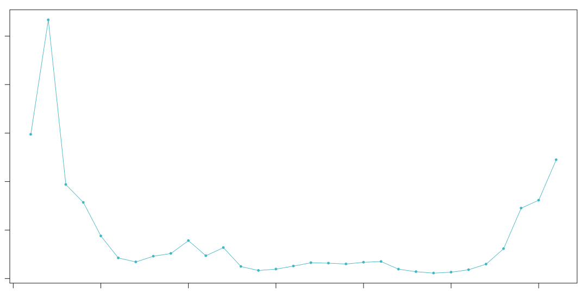
## NULL
## [1] "Creating 879 artificial doublets..."
## [1] "Creating Seurat object..."
## [1] "Normalizing Seurat object..."
## [1] "Finding variable genes..."
## [1] "Scaling data..."
## [1] "Running PCA..."
## [1] "Calculating PC distance matrix..."
## [1] "Computing pANN..."
## [1] "Classifying doublets.."
## [1] "Creating 879 artificial doublets..."
## [1] "Creating Seurat object..."
## [1] "Normalizing Seurat object..."
## [1] "Finding variable genes..."
## [1] "Scaling data..."
## [1] "Running PCA..."
## [1] "Calculating PC distance matrix..."
## [1] "Computing pANN..."
## [1] "Classifying doublets.."
table(pbmc@meta.data$doublet_low)
##
## Doublet Singlet
## 56 2582
table(pbmc@meta.data$doublet_high)
##
## Doublet Singlet
## 50 2588
# Plot results ------------------------
pbmc@meta.data$DF_hi.lo <- pbmc@meta.data$doublet_low
pbmc@meta.data$DF_hi.lo[which(pbmc@meta.data$DF_hi.lo == "Doublet" & pbmc@meta.data$doublet_high == "Singlet")] <- "Doublet-Low"
pbmc@meta.data$DF_hi.lo[which(pbmc@meta.data$DF_hi.lo == "Doublet")] <- "Doublet-High"
table(pbmc@meta.data$DF_hi.lo)
##
## Doublet-High Doublet-Low Singlet
## 50 6 2582
## 结果展示，分类结果在pbmc@meta.data中
reduction_method <- "tsne" # "tsne","umap"
DimPlot(pbmc, reduction = reduction_method, group.by ="DF_hi.lo",cols =c("red","gold","#1bb3b6"),pt.size = 0.8) + ggtitle("DoubletFinder")
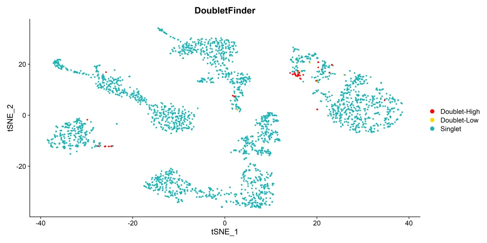
pbmc <- subset(pbmc,DF_hi.lo =="Singlet") #3去除双细胞
# 可视化
# 创建 FeaturePlot
plot1 <- FeaturePlot(pbmc, features = c("CD3D", "CD4", "CD3E", "CD3G"), label = TRUE)
# 创建 DotPlot
plot2 <- DotPlot(pbmc, features = c("CD3D", "CD4", "CD3E", "CD3G"), group.by = 'seurat_clusters') +theme(axis.text.x = element_text(angle = 45, hjust = 1))
plot_combined <- plot_grid(plot1, plot2, ncol = 2)
print(plot_combined)
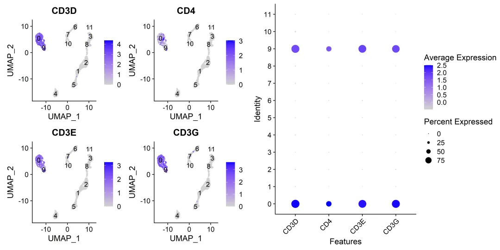
pbmc_T = subset(pbmc,seurat_clusters == 0 | seurat_clusters == 9)
复现感兴趣基因的表达量图
pbmc_T <- NormalizeData(object = pbmc_T) %>%
FindVariableFeatures(selection.method = "vst", nfeatures = 2000) %>%
ScaleData() %>%
RunPCA()
## Centering and scaling data matrix
## PC_ 1
## Positive: STMN1, TUBA1B, HIST1H3B, NUSAP1, TYMS, MKI67, CKS1B, HIST1H1B, TOP2A, HIST1H2AG
## ZWINT, TUBB, BIRC5, CDK1, GTSE1, RRM2, UBE2C, HMGB2, HIST1H3G, ASPM
## HIST1H2AH, PCLAF, HIST1H4C, HIST1H4D, H2AFX, HIST1H2BH, HIST1H2AL, CCNA2, CDKN3, CENPW
## Negative: TXNIP, NEAT1, LTB, MALAT1, IL7R, AHNAK, TSC22D3, KLRB1, BIRC3, IGKC
## CD226, PPP1R15A, TIMP1, GZMM, KIAA1551, CCND2, GPR183, BTG2, ITGB1, SATB1
## TP53INP1, KLF2, AC133644.2, BCL2L11, FKBP11, PIM2, MT-ND2, SORL1, CYSLTR1, TSHZ2
## PC_ 2
## Positive: S100A10, KLF2, S100A6, ANXA1, IL7R, TAGLN2, CRIP1, NOSIP, TIMP1, CDC25B
## DSTN, ANXA2, VIM, LMNA, CRIP2, CDKN2D, AHNAK, LGALS1, ITGB1, PLP2
## KLF3, ATP2B1, MYADM, TSC22D3, LTB, SH3BP5, ARL4A, TCF7, RASGRP2, LYAR
## Negative: SRGN, TIGIT, LAG3, HAVCR2, CD2, LYST, CCL4, RDH10, IFNG, CTLA4
## ZBED2, ZFP36L1, PDCD1, CCL3, AC017002.3, IKZF3, LINC01943, RNF19A, ICOS, CST7
## PTPN7, SIRPG, PTMS, NMB, FABP5, TNFRSF18, LINC01480, SLC27A2, LINC01281, IL2RB
## PC_ 3
## Positive: GINS2, FAM111B, TCF7, HELLS, MCM7, PCNA, FKBP5, E2F1, MCM3, MCM6
## CHEK1, CDC6, CDC45, CDCA7, MCM10, CCNE2, MCM4, DUT, WDR76, CLSPN
## MSH6, PRKDC, MCM5, CDT1, FEN1, RPS2, TIMP1, TK1, RPS18, TSHZ2
## Negative: CCL4, CCL5, CCNB1, PLK1, DLGAP5, GZMA, CST7, NKG7, CDC20, PIF1
## PRF1, PLEK, HAVCR2, KIF14, GNLY, UBALD2, CENPA, TROAP, CCNB2, NEK2
## KNSTRN, GZMK, GZMB, CENPE, LAG3, NUF2, PRDM1, ARL6IP1, AURKA, CXCR6
## PC_ 4
## Positive: NKG7, GZMA, GZMK, CCL5, GZMH, PLEK, GZMB, GNLY, PRF1, CST7
## FGFBP2, CCL4, FAM111B, CLSPN, SLAMF7, CHI3L2, CDC45, SLF1, PCNA, CXCR6
## HIST1H2AG, RRM2, CDT1, C12orf75, HIST1H1D, TIMD4, HIST1H2AB, FEN1, CADM1, CCNE2
## Negative: DOK5, CDC20, IGFL2, NR3C1, GNG4, PHEX, TNFRSF4, AHI1, TNFRSF18, PLK1
## CCNB1, LINC01480, RBPJ, NEK2, FZD3, KIF14, IGFBP4, TSHZ2, RPS8, KNSTRN
## NMB, HSD11B1, RAD21, RGCC, CCNB2, LMO4, DRAIC, LINC01281, SESN3, KIF20B
## PC_ 5
## Positive: MALAT1, NEAT1, SYNE2, AHNAK, XIST, TXNIP, ITGB1, RORA, KIAA1551, IL7R
## TSC22D3, ITGA4, ATP2B1, RAB11FIP1, BIRC3, MT-ND5, MT-ND2, ANKRD36C, ANKRD28, SLC20A1
## ANTXR2, SLC2A3, PPP1R15A, CD2, MYADM, CLDND1, PDE3B, GOLGA4, MXD1, SLC4A7
## Negative: RPS18, GAPDH, RPSA, ACTG1, RPL10A, ACTB, PFN1, RPLP0, FABP5, MT2A
## RPS2, COTL1, PTTG1, RPS8, RAN, EEF1B2, MZT2B, COX8A, SLC25A5, HMGN2
## PPIA, TROAP, SNRPG, ILF2, SNRPE, NME1, MZT2A, MT1E, PSME2, SNHG25
# 简单判断一下用多少PC
ElbowPlot(pbmc_T, ndims=50)
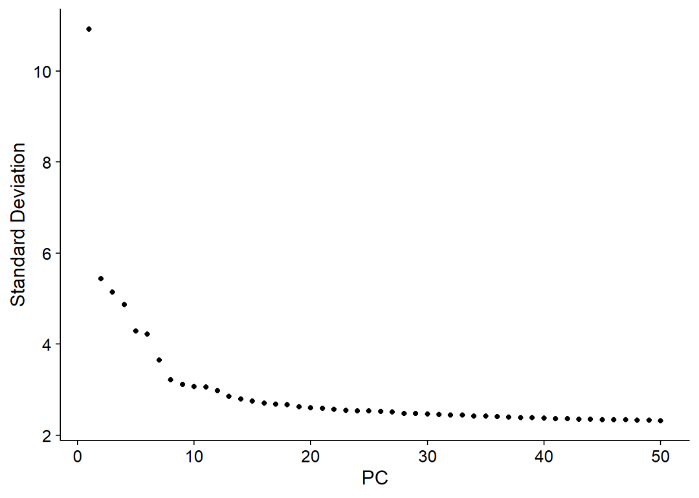
dim.usage <- 30
pbmc_T <- FindNeighbors(pbmc_T, dims = 1:dim.usage) %>%
FindClusters(resolution = 0.7) %>%
RunUMAP(dims = 1:dim.usage) %>%
RunTSNE(dims = 1:dim.usage)
## Computing nearest neighbor graph
## Computing SNN
## Modularity Optimizer version 1.3.0 by Ludo Waltman and Nees Jan van Eck
##
## Number of nodes: 644
## Number of edges: 30618
##
## Running Louvain algorithm...
## Maximum modularity in 10 random starts: 0.6395
## Number of communities: 5
## Elapsed time: 0 seconds
## 01:25:13 UMAP embedding parameters a = 0.9922 b = 1.112
## Found more than one class "dist" in cache; using the first, from namespace 'BiocGenerics'
## Also defined by 'spam'
## 01:25:13 Read 644 rows and found 30 numeric columns
## 01:25:13 Using Annoy for neighbor search, n_neighbors = 30
## Found more than one class "dist" in cache; using the first, from namespace 'BiocGenerics'
## Also defined by 'spam'
## 01:25:13 Building Annoy index with metric = cosine, n_trees = 50
## 0% 10 20 30 40 50 60 70 80 90 100%
## [----|----|----|----|----|----|----|----|----|----|
## **************************************************|
## 01:25:13 Writing NN index file to temp file C:\Users\熊\AppData\Local\Temp\RtmpYz2BWE\file218072637575
## 01:25:13 Searching Annoy index using 1 thread, search_k = 3000
## 01:25:13 Annoy recall = 100%
## 01:25:14 Commencing smooth kNN distance calibration using 1 thread with target n_neighbors = 30
## 01:25:15 Initializing from normalized Laplacian + noise (using irlba)
## 01:25:15 Commencing optimization for 500 epochs, with 24878 positive edges
## 01:25:18 Optimization finished
# TCF1-hi
FeaturePlot(pbmc_T, features = c("TCF7", "LEF1", "FAS", "CXCR5","IL7R","CD28","CCR7","GPR183"), label = TRUE,pt.size=2)
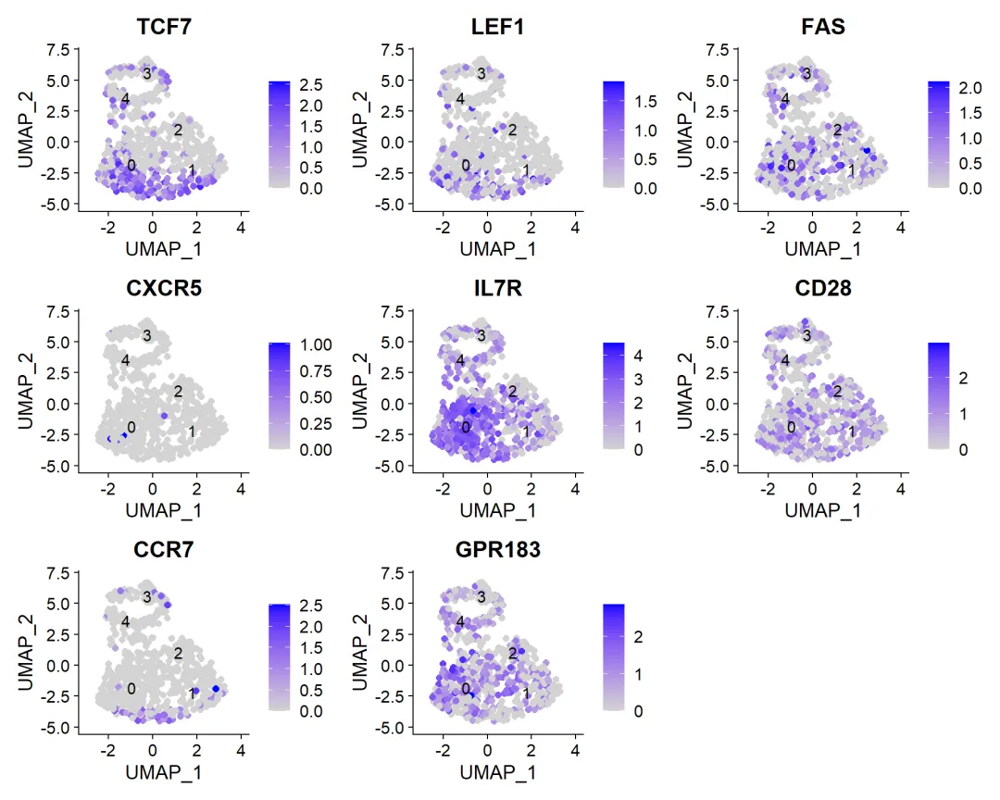
# TFH-like
FeaturePlot(pbmc_T, features = c("BCL6", "IL21", "CXCL13", "TNFSF8"), label = TRUE,pt.size=2)
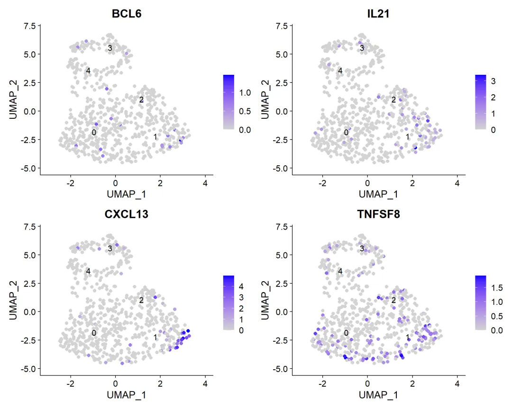
# Proliferation
FeaturePlot(pbmc_T, features = c("E2F8", "MKI67", "PCNA", "MCM2"), label = TRUE,pt.size=2)
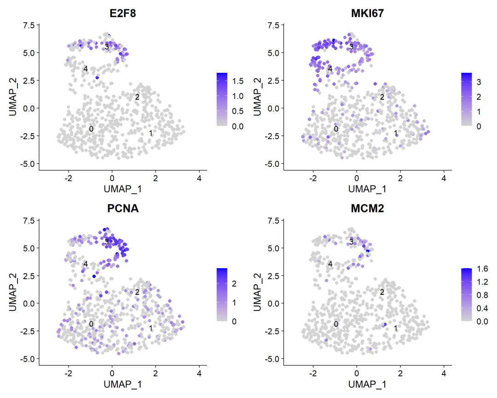
# Cytotoxic
FeaturePlot(pbmc_T, features = c("EOMES", "NKG7", "GZMB", "CCL4","PRF1","SLAMF7","GZMK","CCL5"), label = TRUE,pt.size=2)
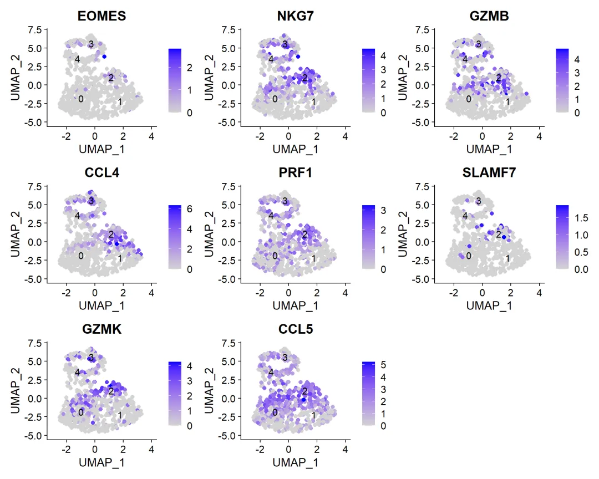
# Transcription factors
FeaturePlot(pbmc_T, features = c("FOXO1", "TBX21", "PRDM1", "MAF","TOX","FOXP3"), label = TRUE,pt.size=2)
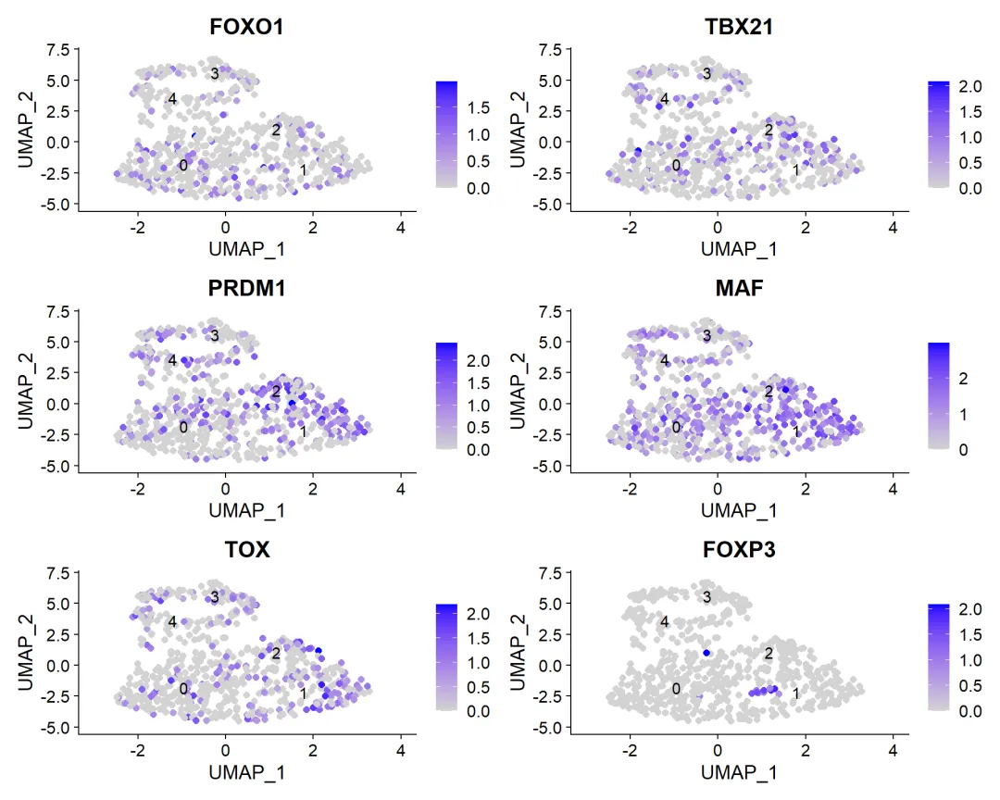
# iNHIBITORY RECEPTORS
FeaturePlot(pbmc_T, features = c("PDCD1", "CTLA4", "HAVCR2", "TIGIT","CD96","LAG3"), label = TRUE,pt.size=2)
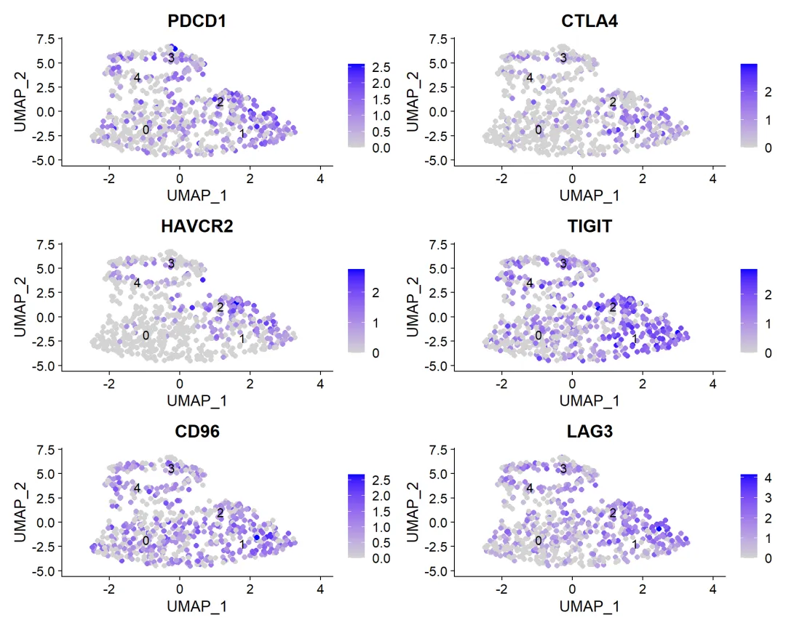
# TGF-贝塔 signal
FeaturePlot(pbmc_T, features = c("TGFB1", "SMAD3"), label = TRUE,pt.size=2)
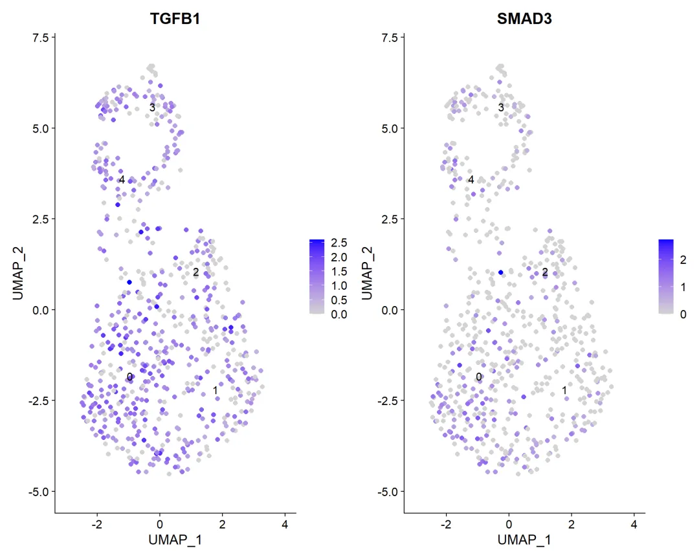
#Cytokines/Chemokines
FeaturePlot(pbmc_T, features = c("IFNG", "TNF"), label = TRUE,pt.size=2)
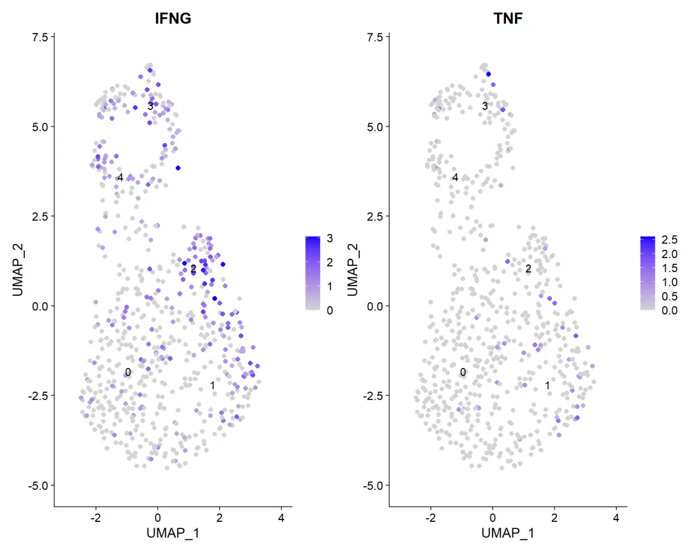
# Signatures
不同cluster UMP图
rgb_to_hex <- function(r, g, b) {
return(paste0("#", sprintf("%02X", r), sprintf("%02X", g), sprintf("%02X", b)))
}
new.cluster.ids <- c("TCF1hi", "TFH-like", "Cycling 1", "T cyto","Cycling 2")
# 所以这个要我自己去调整一下,应该是注释的细胞群不一样吧
names(new.cluster.ids) <- levels(pbmc_T)
# 给pbmc也就是seruat对象调数据id label
pbmc_T <- RenameIdents(pbmc_T, new.cluster.ids)
p1 = DimPlot(pbmc_T, reduction = "umap", label = TRUE,pt.size = 2)
# 饼图
# 聚类簇名称到自定义标签的映射字典
cluster_labels <- c("TCF1hi", "TFH-like", "Cycling 1", "T cyto", "Cycling 2")
# 将聚类信息映射到自定义标签
pbmc_T$cluster_label <- cluster_labels[pbmc_T$seurat_clusters]
# 计算不同标签的占比
cluster_counts <- table(pbmc_T$cluster_label)
# 创建一个数据框
cluster_data <- data.frame(
Cluster = names(cluster_counts),
Count = as.numeric(cluster_counts)
)
# 计算百分比
cluster_data$Percentage <- cluster_data$Count / sum(cluster_data$Count) * 100
color_mapping <- data.frame(
Cluster = c("TCF1hi", "TFH-like", "Cycling 1", "T cyto", "Cycling 2"),
Color = c("#F2766D", '#A3A500', "#01BE7E", "#00B0F6", "#E66BF3")
)
# 将颜色映射到数据中
cluster_data <- merge(cluster_data, color_mapping, by = "Cluster")
# 创建饼图
p2 = ggplot(cluster_data, aes(x = "", y = Count, fill = Cluster)) +
geom_bar(stat = "identity", width = 1) +
geom_text(aes(label = paste0(round(Percentage, 1), "%")), position = position_stack(vjust = 0.6)) +
coord_polar(theta = "y") +scale_fill_manual(values = rev(c('#A3A500',"#F2766D", "#00B0F6","#E66BF3", "#01BE7E")))
labs(title = "Cluster Proportions")
## $title
## [1] "Cluster Proportions"
##
## attr(,"class")
## [1] "labels"
# 0 -TCF1hi 1-TFH-like 2 - Cycling1 3-T cyto 4 - Cycling 2
plot_combined <- plot_grid(p1, p2, ncol = 2)
print(plot_combined)
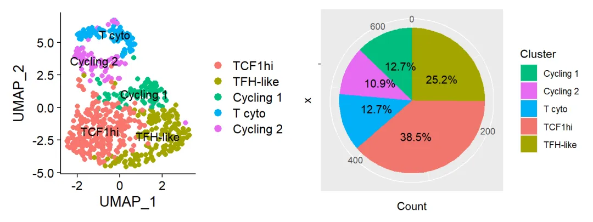
不同cluster热图
all_markers <- FindAllMarkers(object = pbmc_T)
## Calculating cluster TCF1hi
## Calculating cluster TFH-like
## Calculating cluster Cycling 1
## Calculating cluster T cyto
## Calculating cluster Cycling 2
top5 <- all_markers %>% group_by(cluster) %>% top_n(20, avg_log2FC)
##Seurat 初始热图
print(DoHeatmap(pbmc_T,top5$gene))
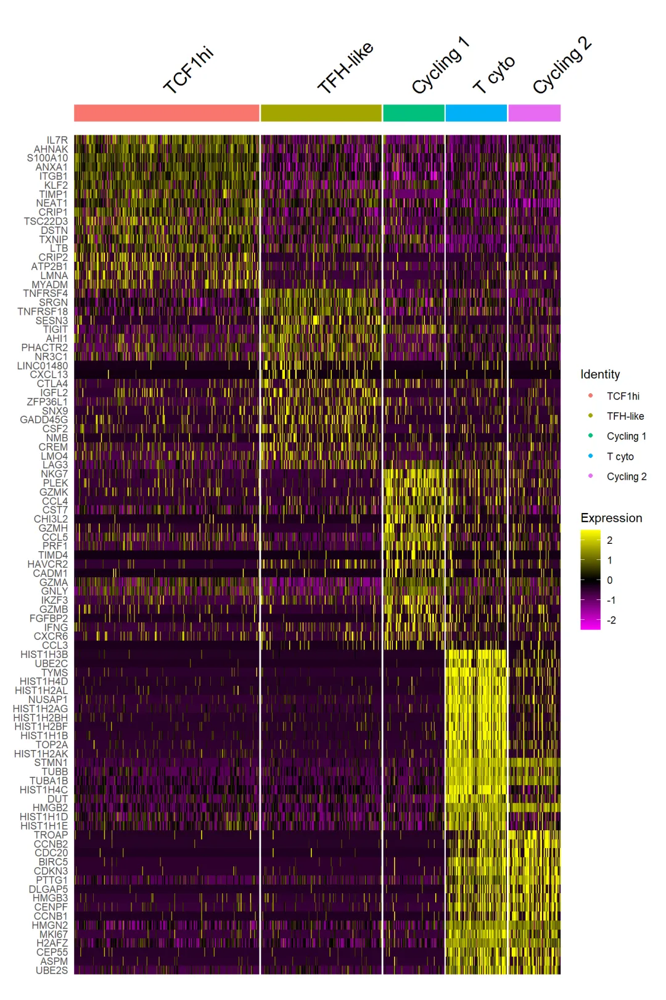
计算细胞周期信号分数和TCR 信号分数Add
library(msigdbr)
# TCR gene 来自 MsigdR
tmp =msigdbr(species = "Homo sapiens",category = "C5",subcategory = "GO:CC")
tcr_genes <- tmp[tmp$gs_name == "GOCC_T_CELL_RECEPTOR_COMPLEX",]$gene_symbol %>%unique()
pbmc_T <- AddModuleScore(pbmc_T, features = list(tcr_genes), name = "TCR_signaling_Score")
tmp =msigdbr(species = "Homo sapiens",category = "C2")
# 计算 cell cycling 基因模块得分
cell_cycling_genes <- tmp[tmp$gs_name == "BIOCARTA_G1_PATHWAY",]$gene_symbol %>%unique()
pbmc_T <- AddModuleScore(pbmc_T, features = list(cell_cycling_genes), name = "Cell_cycling_Score")
# 进行可视化
umap <- data.frame(pbmc_T@meta.data, pbmc_T@reductions$umap@cell.embeddings)
cell_type_med <- umap %>%
group_by(cluster_label) %>%
summarise(
UMAP_1 = median(UMAP_1),
UMAP_2 = median(UMAP_2)
)
p1 = ggplot(umap, aes(UMAP_1, UMAP_2)) +
geom_point(aes(colour = TCR_signaling_Score1)) + scale_color_gradient(low = "#007DFF",high = "#F32700")+
ggrepel::geom_label_repel(aes(label = cluster_label),fontface="bold",data = cell_type_med,point.padding=unit(0.5, "lines"))+labs(title = "TCR_signaling_Score") + theme_bw()
p2 = ggplot(umap, aes(UMAP_1, UMAP_2)) +
geom_point(aes(colour = Cell_cycling_Score1)) + scale_color_gradient(low = "#007DFF",high = "#F32700")+
ggrepel::geom_label_repel(aes(label = cluster_label),fontface="bold",data = cell_type_med,point.padding=unit(0.5, "lines"))+labs(title = "Cell_cycling_Score") + theme_bw()
p1+p2
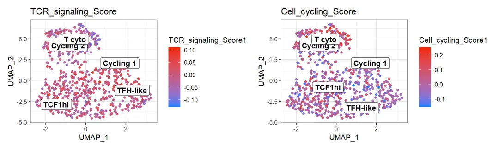
Different vasculitogenic CD4+ T cell subpopulations share TCR clones.
Monocle3拟时序分析
library(monocle3)
## 载入需要的程辑包：SingleCellExperiment
##
## 载入程辑包：'SingleCellExperiment'
## The following object is masked from 'package:edgeR':
##
## cpm
##
## 载入程辑包：'monocle3'
## The following objects are masked from 'package:Biobase':
##
## exprs, fData, fData<-, pData, pData<-
library(ggsci)
expression_matrix = pbmc_T@assays$RNA@data
cell_metadata = data.frame(pbmc_T@meta.data)
gene_annotation = data.frame(expression_matrix[,1])
gene_annotation[,1] = row.names(gene_annotation)
colnames(gene_annotation)=c("gene_short_name")
##构建Monocle3 cds对象
cds <- new_cell_data_set(expression_matrix,
cell_metadata = cell_metadata,
gene_metadata = gene_annotation)
#预处理，相当于Seurat流程normalize过程
#counts数据选择norm_method = c("log")
#data数据选择norm_method = c("none")
cds <- preprocess_cds(cds, num_dim = 100,norm_method = c("none"))
#去除批次效应,多个样本时可以通过此方式去除批次
cds <- align_cds(cds, alignment_group = "orig.ident")
## Aligning cells from different batches using Batchelor.
## Please remember to cite:
## Haghverdi L, Lun ATL, Morgan MD, Marioni JC (2018). 'Batch effects in single-cell RNA-sequencing data are corrected by matching mutual nearest neighbors.' Nat. Biotechnol., 36(5), 421-427. doi: 10.1038/nbt.4091
## 降维，默认是"Umap"方式
cds <- reduce_dimension(cds,cores=30)
## No preprocess_method specified, and aligned coordinates have been computed previously. Using preprocess_method = 'Aligned'
## Note: reduce_dimension will produce slightly different output each time you run it unless you set 'umap.fast_sgd = FALSE' and 'cores = 1'
## Found more than one class "dist" in cache; using the first, from namespace 'BiocGenerics'
## Also defined by 'spam'
## Found more than one class "dist" in cache; using the first, from namespace 'BiocGenerics'
## Also defined by 'spam'
## 聚类分群，分辨率调小，是为了让细胞是一群可以更好展示
cds <- cluster_cells(cds,resolution = 0.001)
## 拟时序
cds <- learn_graph(cds)
##
|
| | 0%
|
|======================================================================| 100%
##选择特定细胞作为起点，代码比交互式页面方便许多，且不会出现选中自己不想要的细胞
myselect <- function(cds,select.classify,my_select){
cell_ids <- which(colData(cds)[,select.classify] == my_select)
closest_vertex <-
cds@principal_graph_aux[["UMAP"]]$pr_graph_cell_proj_closest_vertex
closest_vertex <- as.matrix(closest_vertex[colnames(cds), ])
root_pr_nodes <-
igraph::V(principal_graph(cds)[["UMAP"]])$name[as.numeric(names
(which.max(table(closest_vertex[cell_ids,]))))]
root_pr_nodes}
cds <- order_cells(cds, root_pr_nodes=myselect(cds,select.classify = 'cluster_label',my_select = "TCF1hi"))
##使用Seurat的UMAP信息，这样可以与Seurat对象的细胞分布保持一致
cds.embed <- cds@int_colData$reducedDims$UMAP
int.embed <- Embeddings(pbmc_T, reduction = "umap")
int.embed <- int.embed[rownames(cds.embed),]
cds@int_colData$reducedDims$UMAP <- int.embed
##不同细胞类型拟时序数值
##拟时序值越高表示细胞分化程度越高，这里仅为演示，并非真实分化情况
plot_cells(cds, color_cells_by = "pseudotime",
show_trajectory_graph=T,trajectory_graph_segment_size = 2) + plot_cells(cds,
color_cells_by = "cluster_label",
label_cell_groups=FALSE,
label_leaves=FALSE,
label_branch_points=FALSE,
graph_label_size=1)+ scale_color_manual(values = pal_jco("default", alpha = 0.6)(9))
## Cells aren't colored in a way that allows them to be grouped.
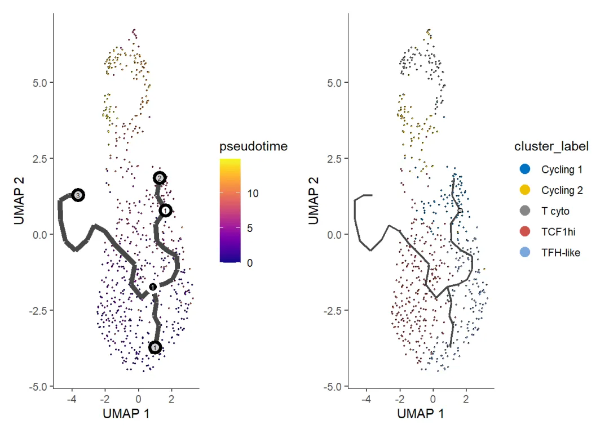
01
二、测试文件及代码
如果你也想学习本文的代码和思路，我们给大家准备好了测试文件和代码：
链接：https://pan.baidu.com/s/1J7E4zb6gCACTPKK7stPeGg?pwd=pr9d
02
三、合作方介绍
本次活动由Biomamba生信基地 组织主办、北京寻因生物科技 有限公司独家冠名、科研者之家、西柚云超算联合赞助，设立总价值约50W 的科研助力基金。 北京寻因生物科技有限公司：
北京寻因生物科技有限公司（简称寻因生物）成立于2018年，秉承“用技术温暖生命，预见未来”的企业愿景，致力于全球单细胞市场标准普世化发展，推动单细胞技术在早筛、临床、药研等应用方向的深耕落地，为全球科学家、技术公司及药企工业等客户提供可信赖的高品质单细胞技术服务及实验室建设解决方案。
科研者之家：
科研者之家（www.home-for-researchers）是目前国内最知名的科研工具箱平台，以“科研不停，神器不止”为理念，自2019年上线以来，多款工具火爆科研界，如AI写作助手、Figdraw在线绘图平台、生信零代码平台、AI润色、DLP一键改写降重、中文版Pubmed、课题思路助手等。截止目前，包括Nature，Advanced Materials等顶级期刊在内，科研者之家相关科研工具被论文引用已超2300次之多。
西柚云超算：
西柚云是一家专注于科研共享计算的云服务基建型公司。于2022年推出独立研发的大禹共享型计算系统，具有实例动态迁移（拒绝传统型共享服务器单节点卡顿）、开箱即用的生信环境、每个用户拥有独立的实例和root权限等特性。
03
**本次活动最终解释权归主办方所有!********主办方拥有对作品的编辑、宣发权利! **

如何联系我们

 公众号后台消息回复不便，这里给大家留一下领取资料及免费服务器(足够支持你完成硕博生涯的生信环境)的微信号 ，方便各位随时交流、提建议（科研任务繁重，回复不及时请见谅）。此外呼声一直很高的交流群 也建好了，欢迎大家入群讨论：
公众号后台消息回复不便，这里给大家留一下领取资料及免费服务器(足够支持你完成硕博生涯的生信环境)的微信号 ，方便各位随时交流、提建议（科研任务繁重，回复不及时请见谅）。此外呼声一直很高的交流群 也建好了，欢迎大家入群讨论：
大家可以阅读完这几篇之后添加给生信入门初学者的小贴士 如何搜索公众号过往发布内容

 您点的每个赞和在看，我都认真当成了喜欢
您点的每个赞和在看，我都认真当成了喜欢